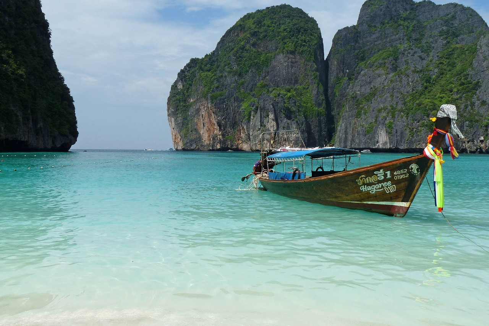

Phuket is among the world’s finest beach destinations, with fine white sands, nodding palm trees, glittering seas and lively towns. It has something for a wide array of tastes and budgets, with hundreds of hotels to choose from, an eclectic choice of dining and plenty of partying options. Aside from visiting the fantastic attractions of Thailand’s biggest island, you can take an exhilarating speedboat trip to the many nearby tropical islands, including the famous Koh Phi Phi, or enjoy a serene cruise around the mystical Phang Nga Bay.
There are several options:
Phuket is a tropical island destination so the best time to go is largely dependent on the weather. Phuket is least rainy from around the end of November till mid-April, making this the ideal time to visit. The seas will be at their calmest as well.
The most popular coastal areas to stay in Phuket are Kata, Karon, and Patong. If you’d like a taste of Phuket history and culture, then the Old Town is the best place to stay.